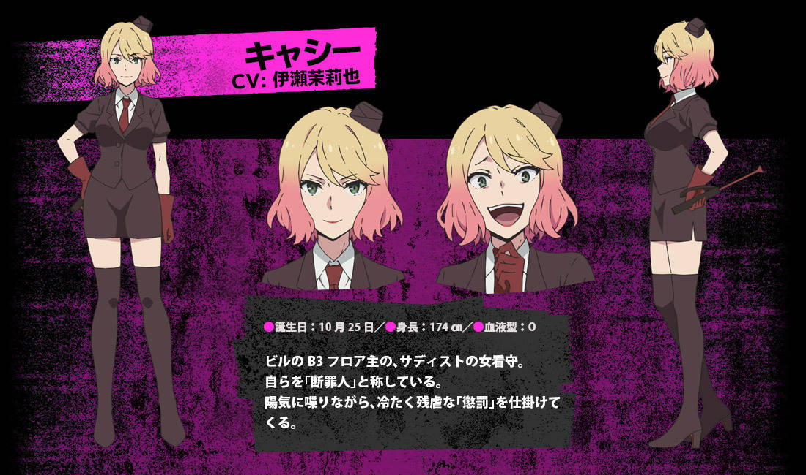

凱薩琳·華德/凱西
（キャサリン・ワード/キャシー，Catherine·Ward/Cathy)
- 聲優：伊瀬茉莉也
Floor B3的層主。生日10月25日。
身穿黑色上衣和緊身裙，搭配黑色長靴，紅色手套和領帶，頭戴黑色看守帽。眼睛為綠色。豐滿的身材和美豔的容貌。頭髮為金色和粉紅色的漸變。手持紅色鞭子（機關遙控器）。
自稱為「處刑人」（日語寫作『斷罪人』）。興奮時會發出尖銳的笑聲。只要看到被自己判為罪犯的人受盡痛苦折磨就會很開心。雖然說話方式十分爽朗又俏皮，但是會說出看不起對方的話。常被札克叫做抖S女或SM女。
